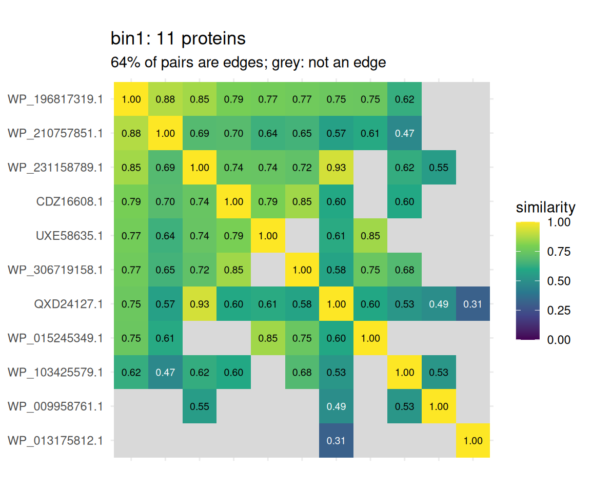
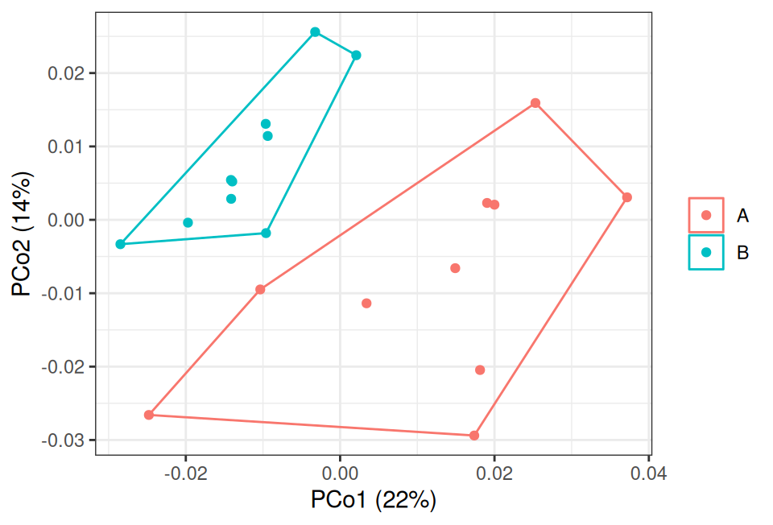

Structure-aware beta diversity and protein bins with repdist
Yixuan Yang
Introduction
Metaproteomes are usually compared by accession: Bray-Curtis, or a
test per protein, treats two different proteins as unrelated even when
they share fold and function. Proteins of one function in different
organisms are often too far apart in sequence for a sequence clustering
to join them. repdist compares proteins by their embeddings
from a protein language model, by default TM-Vec. The TM-score is a
measure of structural similarity between two proteins, from 0 to 1;
above about 0.5 they usually share a fold. TM-Vec is trained so that the
cosine similarity of two embeddings is the predicted TM-score, without
needing a structure.
The embeddings serve two jobs that do not depend on each other:
- protein bins:
protein_similarity()andbin_proteins()group structurally similar proteins by Markov clustering. This needs only the proteins and their embeddings, not a count table or any sample, so it works as a stand-alone protein clustering; - beta diversity:
sample_mmd()gives a sample-by-sample distance, the maximum mean discrepancy (MMD) between the samples’ abundance-weighted distributions over the embeddings. This needs no bins.
bin_glom() then sums a count table within bins, so that
any differential abundance method can test bins instead of single
proteins. The goal is to see a change in what the proteins do, not only
in which accessions are present.
The simulated data
simulate_cog is a simulated experiment, built from the
NCBI COG 2024 release (Galperin et al. 2025) so that the answer is
known. Twenty metaproteome samples, ten in group A and ten in group B,
share the same 100 background proteins, drawn at random from other COGs.
What differs is one function: each group-A sample also holds a GrpE
protein, the nucleotide exchange factor of the HSP-70 chaperone
(COG0576), which no group-B sample holds.
The design is meant to defeat a comparison by accession. Each group-A
sample holds a different GrpE protein, and the ten come from
ten different 30%-identity MMseqs2 clusters, so no protein and no
sequence family is enriched in more than one sample. A test on
accessions sees ten rare proteins; only a method that recognises the ten
as one function, GrpE, sees the group-A enrichment.
?simulate_cog gives the details, and
inst/scripts/make_simulate_cog.R how it was built.
| Samples | 20: 10 in group A, 10 in group B |
| Background | 100 proteins from other COGs, in every sample |
| Treatment | 10 GrpE proteins (COG0576), one per group-A sample |
| Remote homology | each GrpE protein in its own MMseqs2 30%-identity cluster |
| Perturbation | 5% of each group-A sample’s abundance on its GrpE protein (3.6-6.9% after sampling) |
| Counts | negative binomial around a depth of 20,000 (9,507-30,301) |
if (!requireNamespace("BiocManager", quietly = TRUE)) {
install.packages("BiocManager")
}
# dependencies = TRUE also installs vegan and ggplot2, used below
BiocManager::install("repdist", dependencies = TRUE)library(repdist)
library(vegan)
library(ggplot2)
data(simulate_cog, package = "repdist")Inputs
A real analysis starts from three files, which
simulate_cog holds as objects; each step below gives the
file-based code commented out above the code that runs here. Only the
first call, embed_proteins(), needs the model, so it does
not run in this vignette.
Proteins and their embeddings
A FASTA file of the proteins identified in the samples: one record
per protein, with the protein ID as the first word of the header
(>WP_1.1 description gives the ID WP_1.1).
embed_proteins() reads it and returns an
AAStringSet with one embedding per protein in
mcols(proteins)$embedding. Its first call downloads the
model (up to a few GB), and the 110 proteins here take about 40 seconds
afterwards on a laptop with an Apple M-series GPU.
known_models() lists the models, and
read_fasta() reads and checks a FASTA file.
# not run: downloads the model on first use
# proteins <- embed_proteins("path/to/proteins.fasta") # model = "tmvec"
# the same, for this vignette's FASTA:
# proteins <- embed_proteins(system.file("extdata", "simulate_cog.fasta",
# package = "repdist"))
proteins <- simulate_cog$proteins # embeddings precomputed
proteins
#> AAStringSet object of length 110:
#> width seq names
#> [1] 211 MNVDQVNSDCPPTEFPVDSDQI...GFRYGNRILRPEEVIIFKYHKA UXE58635.1
#> [2] 218 MKTNNEVTDNSNKEVNESGEVT...LQKGYILNGRLIRPALVIVNKH CDZ16608.1
#> [3] 219 MAEQKDINMEEAVKEDSINKED...ELLKGYMYRDTVVRHSMVAVVS WP_306719158.1
#> [4] 186 MFFEQTVLFDDENHESAQQNSA...LRNGYMIGNRCLRTSLVIVNKL WP_231158789.1
#> [5] 217 MDKTKNKDQVKNDQDNDYLLLD...VSKKIIKNIDNDNKEDTKGDEV WP_196817319.1
#> ... ... ...
#> [106] 504 MSCASDCAEKECDMRERASGIL...KKGALTQKVRSDLARLNETYRR WP_277855706.1
#> [107] 131 MHNADPALKAVIEACDRAISQE...QKQGERWLCTVDNSYGTDLLDD WP_004209729.1
#> [108] 146 MDNIDTAILDCLKENGRVTASE...ITGVSSSNTFITLATLKEELNC WP_125669242.1
#> [109] 475 MRHRTVSLFDLLGHKPRIDGSW...NGRALMLSASRLRHLAGLSGKE WP_157731854.1
#> [110] 251 MIIQNNEELDGLKEIGKICAII...AQIEHTIVVTKEGPLLLTKLED WP_048540673.1
dim(S4Vectors::mcols(proteins)$embedding) # proteins x embedding dimensions
#> [1] 110 512Counts
A table of counts, such as spectral counts or PSMs, with one row per
sample, one column per protein, sample IDs in the first column of the
file and protein IDs as the column names. Every protein in the table
needs an embedding with the same name; proteins in proteins
that no sample holds are ignored.
# counts <- as.matrix(read.delim("path/to/counts.tsv", row.names = 1,
# check.names = FALSE))
counts <- simulate_cog$counts
counts[1:3, 1:3] # samples x proteins
#> UXE58635.1 CDZ16608.1 WP_306719158.1
#> A01 1003 0 0
#> A02 0 1380 0
#> A03 0 0 352Sample table
One row per sample, in the row order of the count table, with the design variables to test.
# samples <- read.delim("path/to/samples.tsv")
samples <- simulate_cog$samples
head(samples, 3)| sample | group | grpe_protein | |
|---|---|---|---|
| A01 | A01 | A | UXE58635.1 |
| A02 | A02 | A | CDZ16608.1 |
| A03 | A03 | A | WP_306719158.1 |
Annotation
simulate_cog$annotation has one row per protein and is
not an input of repdist: it holds the answer, so that the
results can be scored. Its columns are protein (the ID),
role (GrpE for the ten treatment proteins or
background), enriched_in (the sample a GrpE
protein is spiked into), the COG assignment (cog,
cog_name, gene, category),
length, organism, and mmseqs30,
the protein’s MMseqs2 30%-identity cluster.
annotation <- simulate_cog$annotation
head(annotation[, c("protein", "role", "enriched_in", "cog", "gene")], 3)| protein | role | enriched_in | cog | gene | |
|---|---|---|---|---|---|
| UXE58635.1 | UXE58635.1 | GrpE | A01 | COG0576 | GrpE |
| CDZ16608.1 | CDZ16608.1 | GrpE | A02 | COG0576 | GrpE |
| WP_306719158.1 | WP_306719158.1 | GrpE | A03 | COG0576 | GrpE |
table(annotation$role)
#>
#> background GrpE
#> 100 10Protein bins
Bins group structurally similar proteins and use only
proteins, so this section stands alone: it needs no count
table. protein_similarity() builds the graph that
bin_proteins() clusters. It takes every pair of proteins
whose embeddings have a positive cosine similarity and aligns the two
sequences. A pair becomes an edge, weighted by its predicted TM-score,
only if its alignment E-value is at most 0.01, the number of equally
good alignments expected by chance when searching all of
proteins. The embedding says the proteins may share a
structure and the alignment says the similarity is not an accident of
the model, so an edge needs both. bin_proteins() splits
that graph by Markov clustering (MCL) and returns each protein’s bin
(membership), the proteins of each bin
(clusters) and each bin’s medoid
(representatives). Bins are named bin1,
bin2, … from largest to smallest, and a protein with no
edge is a bin of its own.
# aligns every pair with a positive similarity: quadratic in proteins
S <- protein_similarity(proteins, progress = FALSE)
bins <- bin_proteins(S)
table(size = lengths(bins$clusters))
#> size
#> 1 2 4 11
#> 89 3 1 1Most bins are single proteins, as they should be: the 100 background proteins come from unrelated COGs. The GrpE labels were not used to build the bins, so they can score them: coherence is the share of the GrpE proteins in the bin that holds most of them, and purity the share of that bin’s proteins that are GrpE.
grpe <- annotation$protein[annotation$role == "GrpE"]
grpe_bin <- names(which.max(table(bins$membership[grpe])))
c(coherence = mean(bins$membership[grpe] == grpe_bin),
purity = mean(bins$clusters[[grpe_bin]] %in% grpe))
#> coherence purity
#> 1.0000000 0.9090909All ten GrpE proteins fall in one bin, although they share no more
than 30% sequence identity pairwise (34 of the 45 pairs still pass the
alignment gate). plot_bin_similarity() shows the weight of
every pair inside a bin; a grey cell is a pair that is not an edge.
plot_bin_similarity(bins, grpe_bin, S)
Beta diversity
Beta diversity compares samples. Three distances follow, each on
relative abundances: MMD on the embeddings (sample_mmd()),
Bray-Curtis on the proteins, and Bray-Curtis on the bins. MMD needs only
counts and proteins; the bins are used only
for the third.
Relative abundances
Dividing each sample’s counts by its total removes the difference in sequencing depth between samples. It does not remove its effect on which proteins were seen.
relative <- counts / rowSums(counts)Sample-to-sample distances
sample_mmd() represents each sample as its relative
abundances over the protein embeddings and returns the distance between
those distributions as a dist object.
vegdist() gives Bray-Curtis between samples;
bin_glom() sums the proteins of each bin first, for the
bin-level version.
D <- list(MMD = sample_mmd(relative, proteins),
`Bray-Curtis (protein)` = vegdist(relative, "bray"),
`Bray-Curtis (bins)` = vegdist(bin_glom(relative, bins), "bray"))PERMANOVA
PERMANOVA (adonis2()) tests whether the group centroids
differ, with 999 permutations. R² is the share of the distance variation
that the grouping explains.
permanova <- lapply(D, function(d) {
set.seed(1)
adonis2(d ~ group, data = samples)
})
knitr::kable(data.frame(R2 = vapply(permanova, function(a) a$R2[1], 1),
p = vapply(permanova, function(a) a$`Pr(>F)`[1], 1)), digits = 3)| R2 | p | |
|---|---|---|
| MMD | 0.150 | 0.001 |
| Bray-Curtis (protein) | 0.051 | 0.482 |
| Bray-Curtis (bins) | 0.165 | 0.001 |
Protein-level Bray-Curtis does not detect the enrichment: it compares
accessions, and each GrpE protein is in one sample only, so to it the
enrichment is noise. Both structure-aware distances detect it. MMD
credits the ten GrpE proteins for being close in the embedding space and
needs only the embeddings. Bray-Curtis on bins counts them as one
feature, and needs the alignments of protein_similarity()
first.
PERMDISP
PERMANOVA responds to a difference in spread as well as in centre, so
PERMDISP (betadisper()) tests the spread on its own.
permdisp <- vapply(D, function(d) {
set.seed(1)
permutest(betadisper(d, samples$group))$tab[1, "Pr(>F)"]
}, numeric(1))
round(permdisp, 3)
#> MMD Bray-Curtis (protein) Bray-Curtis (bins)
#> 0.023 0.010 0.877Group A is more spread out under MMD and protein-level Bray-Curtis, as the design builds in: each group-A sample carries a different GrpE protein, and no group-B sample carries one. On bins the GrpE proteins are one feature, so the spread is the same in both groups. Where PERMDISP is significant, the PERMANOVA is partly a test of spread, so read R² with the plot below.
Principal coordinates
Principal coordinates (cmdscale()) place the samples in
two dimensions so that their distances are kept as well as possible;
each group’s outermost samples are joined by a line (its convex
hull).
pcoa <- do.call(rbind, lapply(names(D), function(k) {
data.frame(samples, cmdscale(D[[k]], k = 2), distance = k)
}))
pcoa$distance <- factor(pcoa$distance, names(D))
hull <- do.call(rbind, lapply(split(pcoa, ~ distance + group), function(d) {
d[chull(d$X1, d$X2), ]
}))
ggplot(pcoa, aes(X1, X2, colour = group)) +
geom_point(size = 2) +
geom_polygon(data = hull, fill = NA) +
facet_wrap(~distance, scales = "free") +
labs(x = "PCo1", y = "PCo2") +
theme_bw()
The groups overlap under every distance: the enrichment is 5% of the abundance of ten of the 110 proteins, and R² is 0.15 under MMD, so the test finds a difference that the plot only hints at.
Plotting without the most abundant regions
plot_pcoa() draws the same MMD ordination for a real
dataset, where a few very abundant proteins, such as elongation factor
Tu, can dominate the distances. It leaves out the drop most
abundant regions before the PCoA. A region is a group of proteins linked
by predicted TM-scores of at least min_sim (0.9), so that
near-copies of one protein count as one; a message names the most
abundant protein of each region and its size. The choice ignores the
group labels and is for display only: test on the full distance
above.
plot_pcoa(counts, proteins, samples$group, drop = 2)
#> Dropped 2 regions, 18% of abundance: WP_012740872.1 (1 protein), WP_240984665.1 (1 protein).
Here the two most abundant regions are single background proteins,
18% of the abundance, and dropping them gives a cleaner separation than
the full distance does. drop = 0 draws the full
distance.
Differential abundance
bin_glom() sums the counts within each bin. Any
differential abundance method can take the bin table; here a linear
model per bin on the centred log-ratio (CLR) of the counts, with a
pseudo count of 1, and Benjamini-Hochberg adjustment (q). LFC is the
log2 fold change of group A over group B. Bins with p < 0.05:
bin_counts <- bin_glom(counts, bins) # samples x bins
da <- function(m) {
clr <- log2(m + 1)
clr <- clr - rowMeans(clr)
group <- factor(samples$group, c("B", "A"))
fit <- t(apply(clr, 2, function(y) {
summary(lm(y ~ group))$coefficients["groupA", c("Estimate", "Pr(>|t|)")]
}))
data.frame(feature = colnames(m), LFC = fit[, 1], p = fit[, 2],
q = p.adjust(fit[, 2], "BH"))
}
res <- da(bin_counts)
knitr::kable(transform(res[res$p < 0.05, ], LFC = round(LFC, 2),
p = formatC(p, format = "g", digits = 2),
q = formatC(q, format = "g", digits = 2)),
row.names = FALSE)| feature | LFC | p | q |
|---|---|---|---|
| bin1 | 3.76 | 5.7e-14 | 5.4e-12 |
| bin53 | -0.67 | 0.0057 | 0.27 |
| bin56 | 0.53 | 0.015 | 0.35 |
| bin74 | -0.68 | 0.011 | 0.34 |
The GrpE bin, bin1, is the only one that survives the adjustment (q < 0.05); the other bins with p < 0.05 are what chance gives among 94 tests. The same model on single proteins finds nothing, since each GrpE protein is abundant in one sample only:
per_protein <- da(counts)
c(proteins_q_below_0.05 = sum(per_protein$q < 0.05),
smallest_GrpE_q = min(per_protein$q[per_protein$feature %in% grpe]))
#> proteins_q_below_0.05 smallest_GrpE_q
#> 0.0000000 0.7978687Choosing parameters and cost
max_evalue(default 0.01) is the edge gate ofprotein_similarity(). It is relative to the total length ofproteins, so one value is stricter on a larger set. On this data 1e-5 gives 98 bins, with 9 of the 10 GrpE proteins in one; 0.01 gives 94, with all 10; and 10 gives 25 bins. It matters more for sets with many distant relatives.inflation(default 2) ofbin_proteins()sets how fine the bins are, higher values giving finer ones. Here 1.4 gives purity 0.77 and 2 or 4 give 0.91; a bin’s purity is what annotation, if you have any, can check.sigmaofsample_mmd()is the kernel bandwidth. The default is the median distance between the proteins (1.14 here, wider than any TM-score), and the value used is returned asattr(, "sigma"). For TM-Vec,sigma = sqrt(1 - t)puts the kernel’s1/epoint at predicted TM-scoret:sqrt(1 - 0.9)makes only near-identical folds similar and here lowers R² from 0.15 to 0.08.- Cost.
protein_similarity()aligns every pair with a positive similarity andsample_mmd()holds a protein-by-protein kernel, so on real data use the proteins identified in your samples, never a whole search database. At 20,000 proteins the kernel alone is 3 GB andsample_mmd()needs at least twice that at its peak; the alignments, scaled from 40 minutes for 5,000 proteins on 10 cores, take about 11 hours on 10 cores (n_cores).
A bin is not guaranteed to hold one function. The GrpE bin also holds
a DnaK protein, GrpE’s HSP-70 partner, joined to it by a single edge
with a predicted TM-score of 0.31, which the alignment gate let through;
plot_bin_similarity() shows such an edge.
References
- Aitchison (1982). The statistical analysis of compositional data. https://doi.org/10.1111/j.2517-6161.1982.tb01195.x.
- Anderson (2001). A new method for non-parametric multivariate analysis of variance. https://doi.org/10.1111/j.1442-9993.2001.01070.pp.x.
- Galperin et al. (2025). COG database update 2024. https://doi.org/10.1093/nar/gkae983.
- Gretton et al. (2012). A Kernel Two-Sample Test. https://jmlr.org/papers/v13/gretton12a.html.
- Hamamsy et al. (2024). Protein remote homology detection and structural alignment using deep learning. https://doi.org/10.1038/s41587-023-01917-2.
- Karlin and Altschul (1990). Methods for assessing the statistical significance of molecular sequence features by using general scoring schemes. https://doi.org/10.1073/pnas.87.6.2264.
- Steinegger and Söding (2017). MMseqs2 enables sensitive protein sequence searching for the analysis of massive data sets. https://doi.org/10.1038/nbt.3988.
- van Dongen (2000). Graph clustering by flow simulation. PhD thesis, University of Utrecht.
Session information
sessionInfo()
#> R version 4.6.2 (2026-10-29)
#> Platform: x86_64-pc-linux-gnu
#> Running under: Ubuntu 26.04.1 LTS
#>
#> Matrix products: default
#> BLAS: /usr/lib/x86_64-linux-gnu/openblas-pthread/libblas.so.3
#> LAPACK: /usr/lib/x86_64-linux-gnu/openblas-pthread/libopenblasp-r0.3.32.so; LAPACK version 3.12.0
#>
#> locale:
#> [1] LC_CTYPE=C.UTF-8 LC_NUMERIC=C LC_TIME=C.UTF-8
#> [4] LC_COLLATE=C.UTF-8 LC_MONETARY=C.UTF-8 LC_MESSAGES=C.UTF-8
#> [7] LC_PAPER=C.UTF-8 LC_NAME=C LC_ADDRESS=C
#> [10] LC_TELEPHONE=C LC_MEASUREMENT=C.UTF-8 LC_IDENTIFICATION=C
#>
#> time zone: UTC
#> tzcode source: system (glibc)
#>
#> attached base packages:
#> [1] stats graphics grDevices utils datasets methods base
#>
#> other attached packages:
#> [1] ggplot2_4.0.4 vegan_2.7-6 permute_0.10-0 repdist_0.99.0
#>
#> loaded via a namespace (and not attached):
#> [1] sass_0.4.10 generics_0.1.4 lattice_0.23-1
#> [4] MCL_1.0 digest_0.6.39 magrittr_2.0.5
#> [7] evaluate_1.0.5 grid_4.6.2 RColorBrewer_1.1-3
#> [10] fastmap_1.2.0 jsonlite_2.0.0 Matrix_1.7-6
#> [13] mgcv_1.9-4 viridisLite_0.4.3 scales_1.4.0
#> [16] Biostrings_2.80.2 codetools_0.2-20 jquerylib_0.1.4
#> [19] cli_3.6.6 expm_1.0-1 rlang_1.3.0
#> [22] crayon_1.5.3 XVector_0.52.0 splines_4.6.2
#> [25] withr_3.0.3 cachem_1.1.0 yaml_2.3.12
#> [28] otel_0.3.0 tools_4.6.2 parallel_4.6.2
#> [31] BiocParallel_1.46.0 dplyr_1.2.1 BiocGenerics_0.58.1
#> [34] vctrs_0.7.3 R6_2.6.1 stats4_4.6.2
#> [37] lifecycle_1.0.5 pwalign_1.8.0 Seqinfo_1.2.0
#> [40] S4Vectors_0.50.3 IRanges_2.46.0 MASS_7.3-66
#> [43] cluster_2.1.8.3 pkgconfig_2.0.3 bslib_0.12.0
#> [46] pillar_1.11.1 gtable_0.3.6 glue_1.8.1
#> [49] xfun_0.62 tibble_3.3.1 tidyselect_1.2.1
#> [52] knitr_1.52 farver_2.1.2 htmltools_0.5.9
#> [55] nlme_3.1-171 labeling_0.4.3 rmarkdown_2.32
#> [58] compiler_4.6.2 S7_0.2.2